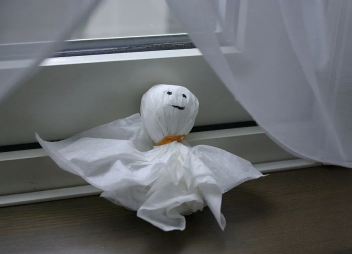
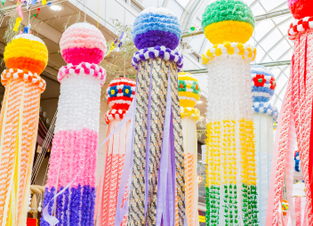

L'estate in Giappone porta con sé temperature calde e umide, con picchi di calore che possono essere intensi. Tuttavia, questa stagione offre anche molte esperienze uniche. Le spiagge sono popolari per le attività balneari e i festival estivi, noti come "matsuri", animano le città con fuochi d'artificio, danze tradizionali e bancarelle di cibo.
“Tanzaku”, le tradizionali strisce di carta sulle
quali vengono espressi i propri desideri.
I “Tanzaku” vengono appesi ai rami di bambù.
“Teru teru bozu”.
"Kusadama".
Tanabata è una festività giapponese tra le più amate e più conosciute in Giappone; identificata come "gosekku", ovvero una delle 5 festività più importanti del calendario giapponese.
La parola Tanabata significa "settima notte” ed è festeggiato, per l’appunto, la settima notte del settimo mese, ma secondo il calendario lunare. Questo significa che le date cambiano tutti gli anni anche se cadono sempre tra luglio ed agosto. A partire dal periodo della Restaurazione Meiji, però, a seguito dell’utilizzo del calendario gregoriano anche in Giappone, la data ufficiale in cui si festeggia è il 7 di luglio, anche se in realtà in molte regioni e città lo si celebra in date differenti.
La città in cui si celebra il più grande ed importante Tanabata Matsuri di tutto il Giappone è Sendai, tra i giorni del 6 e 8 di agosto. Questo è uno dei 3 grandi eventi di tutta la regione del Tohoku.
La storia del Tanabata risale a più di 20 secoli fa ed è parte della cultura folkloristica cinese, dove veniva chiamata Qīxī, ma fu importato in Giappone nel periodo Heian. Questa, in realtà, si sovrappone ad un rito shintoista dello stesso periodo, in cui una miko tesseva una tela di stoffa che veniva poi bruciata come offerta ai kami (le divinità shintoiste) in cambio di una benedizione sul raccolto.
C’è da dire che tra tutte le storie d’amore che si narrano nell’est-asiatico, quella tra Orihime e Hikoboshi, i due protagonisti, è sicuramente quella più amata e raccontata.
Orihime era una principessa dei cieli (hime significa principessa in giapponese), che trascorre le sue giornate a tessere vestiti lungo le rive della Via Lattea (in giapponese la via lattea è chiamata Amanogawa, fiume celestiale); questo la rendeva infelice e triste perché, “lavorando” sempre, non riusciva a trovare il tempo di cercare l’amore.
Hikoboshi, invece, era un pastore che viveva sulla sponda opposta della Via Lattea. Quando il padre di Orihime, che può essere identificato come l’universo stesso, decise di farli incontrare, i due si innamorarono subito e si sposarono nel giro di poco tempo.
Il loro amore, però, fu così intenso che i due innamorati iniziarono a trascurare il loro lavoro; questo comportamento costrinse il padre di Orihime di proibire ai due di vedersi, ad eccezione di un unico giorno l’anno, il settimo giorno del settimo mese.
Nell’astronomia moderna, i due protagonisti di questa storia sono rappresentati dalle stelle Vega e Altair, che nel campo visivo notturno, sono separate dalla via lattea.
Durante la festività del Tanabata vedrete tantissime persone riversarsi per le strade, tra bancarelle di ogni tipo, indossando lo yukata, il classico vestito giapponese che possiamo definire la versione estiva ed informale del kimono; ovviamente indossare lo yukata non è d’obbligo, ma è un qualcosa di veramente caratteristico e tipico tra la popolazione giapponese.
Ma la vera essenza della celebrazione del Tanabata è forse la possibilità di esprimere i propri desideri sperando che questi si realizzino. Infatti, durante questa festività, le persone scrivono su di foglietti di carta colorata, chiamati “tanzaku", i propri desideri, non importa quale sia la preghiera o il sogno che si vuole realizzare; questi vengono poi appesi a dei rami di bambù, finché a fine serata non vengono bruciati al fine di farli arrivare in cielo per potersi realizzare.
Altra particolarità di questa festività è che la sera del Tanabata non deve piovere, altrimenti Orihime e Hikoboshi non riuscirebbero ad incontrarsi. Per scongiurare la pioggia, i giorni prima vengono appese delle bamboline di carta o stoffa, chiamate teru teru bōzu, alle porte ed alle finestre di casa, così che Amefushi, lo spirito della pioggia, venga spaventato evitando che faccia venire a piovere.
Infine, lungo le strade e nei parchi delle città, potrete trovare una grande quantità di kusudama, decorazioni formate da una palla che simboleggia il fiore di dalia nella parte superiore e da lunghe strisce di carta filante colorata subito sotto, che simboleggiano i filamenti che erano tessuti da Orihime. Ovviamente qui c’è da sbizzarrirsi, per cui ne troverete molti dai colori uniformi e tanti altri con immagini classiche, di personaggi anime e manga e via dicendo.
Musicisti folk suonano il taiko, un tamburo
utilizzato nelle forme di musica tradizionale
giapponese.
Danzatori “Gujo Odori”, Gifu.
L’Obon è una festa tradizionale giapponese dedicata alla famiglia e alle persone care passate. È un mix tra Halloween e il Giorno del Ringraziamento nordamericano. Le famiglie che celebrano Obon di solito si riuniscono nella loro città natale, visitano le lapidi, eseguono rituali e partecipano alle feste. Ma non tutte le famiglie seguono le stesse usanze.
Si celebra dal 13 al 15 agosto nella maggior parte del Giappone. Ma alcune regioni celebrano invece a luglio, a seconda del calendario che seguono.
Le vere origini dell’Obon non sono del tutto chiare. Si sa però che è una festa con più di 500 anni di storia, strettamente collegata alle tradizioni buddiste. La leggenda dice che molto tempo fa un discepolo di Buddha ebbe una visione di sua madre morta: era intrappolata nel regno dei Fantasmi Affamati (un posto non proprio divertente dove stare). Così, facendo offerte di cibo e bevande, il discepolo liberò lo spirito di sua madre dalla sofferenza. Questa storia si è lentamente evoluta nel tempo e il significato dell’Obon è cambiato con essa.
Oggi per Obon si intende una festa di famiglia per celebrare i nostri cari qui e ora, indossare kimono e yukata, godersi le feste tradizionali, e anche mangiare street food giapponese.
Un insieme mistico di rituali guida i festival e gli eventi dell’Obon. Continua a leggere i dettagli dei rituali e poi scopri dove puoi partecipare in prima persona!
Bon Odori (盆踊り) è una celebrazione imperdibile che accoglie gli spiriti degli antenati. Troverete folle di festaioli e ballerini in abiti tradizionali nelle strade che si muovono al ritmo dei tamburi taiko. Le danze variano a seconda della regione e rendono la serata vivace e divertente.
La danza più popolare è il Gujo Odori (郡上おどり) nella prefettura di Gifu. Il festival è incentrato su un piccolo gruppo di artisti. Essi siedono su una piattaforma rialzata nel mezzo della città.
Spettacolo pirotecnico ad un “matsuri”.

Spesso alle bancarelle, tra le varie attività, è
possibile provare a “pescare” pesciolini rossi con
una paletta di carta.
L’estate in Giappone è un periodo magico. È vero che il caldo afoso non è di aiuto e c’è il rischio di incappare in qualche tifone, ma la stagione estiva è ricca di eventi da non perdere. Durante l’estate in Giappone avrete la possibilità di assistere agli spettacoli di hanabi (花火), i fuochi d’artificio che illuminano le notti giapponesi, e partecipare ai matsuri, vale a dire ai festival tradizionali dove avrete modo di conoscere il popolo giapponese in una veste totalmente inedita.
I "Matsuri" (祭り) sono le feste tradizionali giapponesi, che sono tipicamente shintoiste e ogni città tramanda la sua festa originale; solitamente sono delle sfilate per le strade cittadine che coinvolgono migliaia di persone. Inoltre, ci sono diverse tipologie di bancarelle della cucina nipponica; questa atmosfera è tipica giapponese ed è possibile assaporarla principalmente in estate.
Questa parola, in giapponese, significa “fiori (花) di fuoco (火)”. I fuochi d’artificio nipponici hanno una loro bellezza splendida ma fugace; la loro storia risale al periodo Edo (1603-1867) da cui vennero sempre amati dal popolo del paese.Di solito, si gode per la loro bellezza ma alcuni comprendono anche il significato di “consolazione” e “lamento funebre” grazie al potere divino del fuoco.Il carattere degli Hanabi del Sol Levante è che si stendono in forma rotonda: gli hanabi fioriscono grandemente e si trasformano graziosamente in varie forme.
Oggi, in tutto il Giappone, potete trovare numerosi spettacoli degli hanabi ma sono particolarmente famosi quelli di Ōmagari (prefettura di Akita), Sumidagawa (prefettura di Tokyo) e Nagaoka (prefettura di Niigata).

Parata con rievocazione storica al festival di Kamakura.
Mikoshi (lett. tempio portatile) al festival di Yayoi, Nikko.
Il leggendario Gion Matsuri, in particolare, è la festa del Santuario Yasaka (Yasaka Shrine) ed è probabilmente la festa giapponese più famosa.
Il festival è caratterizzato da molti eventi diversi, due dei quali sono particolarmente rinomati: lo Junko Yamaboko, una processione di carri allegorici che si svolge il 17 luglio, lo Yoiyama, ossia le tre serate di festa che precedono la processione e che trasformano alcune vie di Kyoto in una brulicante e vivace festa di musica e sapori.
Tra gli eventi minori che caratterizzano questo festival, va ricordata la cosiddetta ”processione di mikoshi“, che si svolge sempre il 17 luglio.
Consiste nel trasportare una sorta di santuario portatile chiamato appunto “mikoshi”, montato su travi in legno e portato in spalla da alcuni uomini.
Il festival nacque come parte di un rituale di purificazione per placare gli dei ed evitare che questi potessero scatenare incendi, inondazioni e terremoti. Nel 869, a seguito di gravi pestilenze, l’Imperatore Seiwa ordinò che la gente pregasse il dio del Santuario Yasaka, Susanoo-no-Mikoto, al fine di esortarlo a porre fine alla tragica situazione. Questa pratica venne poi ripetuta ogni qual volta si verificasse un evento simile. Nel 970 iniziò a diventare una ricorrenza annuale, finché, in pieno periodo Edo, ossia tra il XVII e il XIX secolo, la potente classe mercantile rese la festa più elaborata, servendosi di una parata per sancire e ostentare la propria ricchezza.
In ricordo delle origini, ancora oggi il festival continua l’usanza di selezione di un ragazzo del posto affinché rappresenti un messaggero divino: costui non può mettere piede a terra dal giorno 13 e fino al 17, dopo che i carri hanno terminato la parata per le vie della città.
Yamaboko è una parola che si riferisce ai due tipi di carri utilizzati nel corteo: i carri Yama e i carri Hoko, che possono arrivare a raggiungere i 25 metri di altezza e a pesare fino a 12 tonnellate. La processione dei carri si svolge solitamente la mattina del 17 luglio, tra le 9:00 e le 13:00 e segue un percorso di 3 km lungo le strade Shijo, Kawaramachi e Oike. Alcuni posti a sedere sono a pagamento e richiedono la prenotazione, ma vista la lunghezza del percorso è comunque possibile trovare ottimi punti per godersi la sfilata.
Ogni carro è sormontato da una lunga asta a forma di lancia ed è ornato con accessori e tessuti del migliore artigianato locale, tanto che a volte vengono addirittura descritti come 'musei d’arte mobili'. I carri ospitano inoltre alcuni musicisti che suonano il flauto, i tamburi e le campane. Nei giorni del festival è usanza che la gente vada a visitare i carri, fin dai giorni del loro allestimento (dal 10 al 14 luglio), dove possono acquistare alcuni portafortuna chiamati omamori, che si dice tengano lontani gli spiriti maligni.